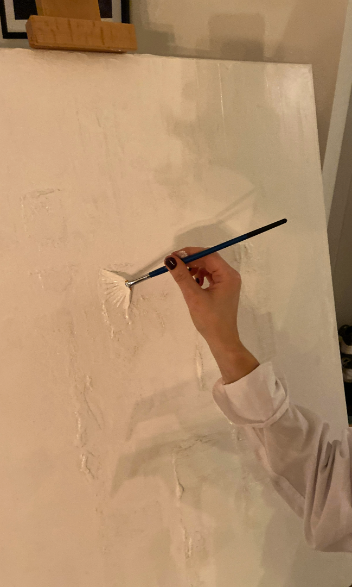

Min konstresa
Kreativitet är en central aspekt för mig. Under min uppväxt har min familj och närstående uppmuntrat mig att utforska och utveckla min kreativa talang genom tavlor, skisser och skulptur. Jag har alltid haft en passion för att skapa konstverk och har ägnat mig åt att måla, skissa och skulptera.
Under pandemin, när möjligheterna att umgås med nära och kära blev begränsade, återupptäckte jag min passion för konst. Jag tog fram mina målardukar, penslar och färger och började skapa. Sedan dess har jag producerat flera konstverk som jag organiserat inom olika serier.
Idag är konstnärligt skapande en av mina främsta intressen och jag fortsätter att utforska och utveckla mina färdigheter inom måleri med en växande passion.
